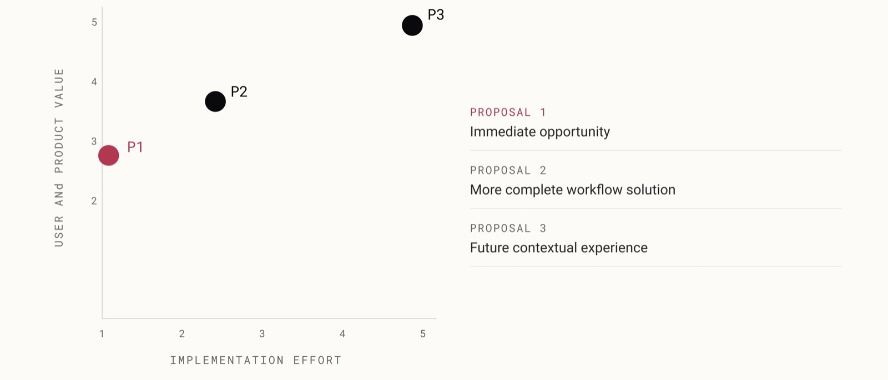
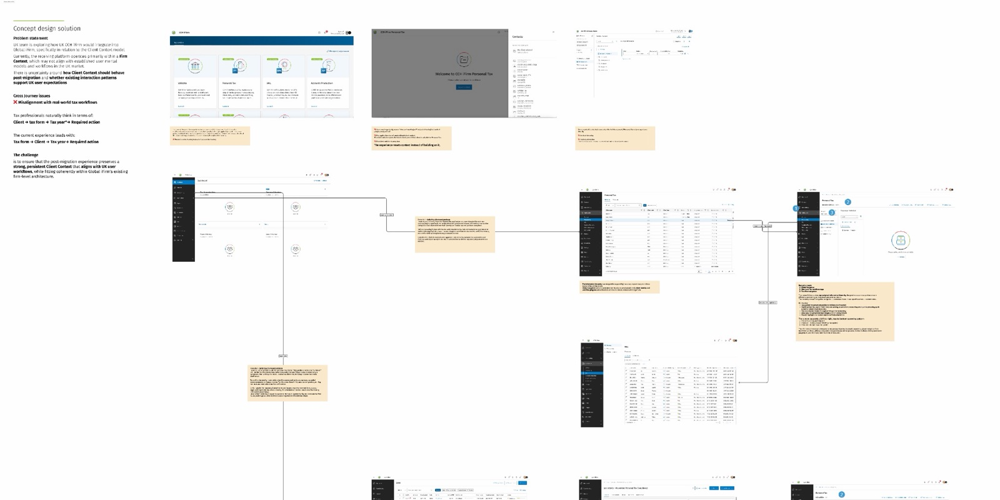
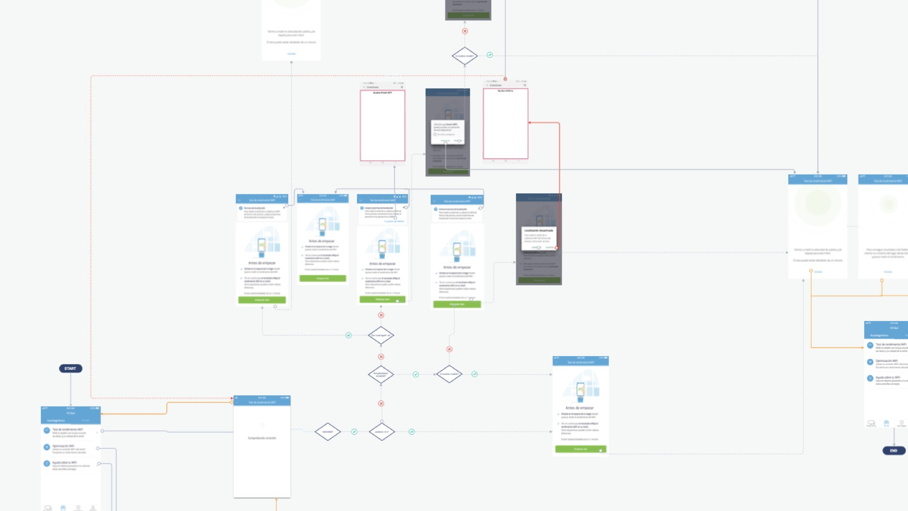
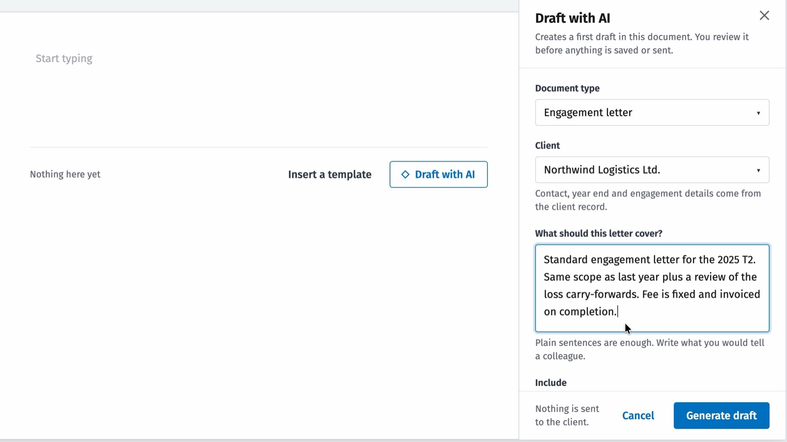
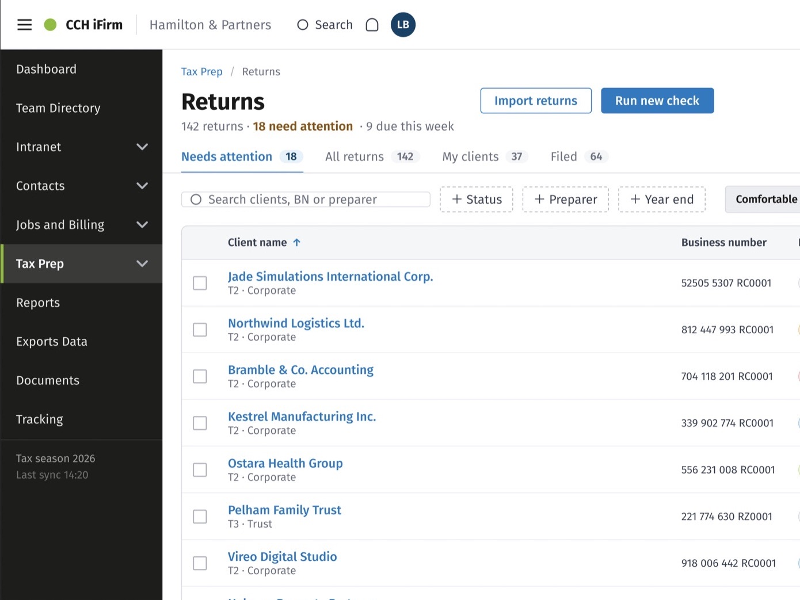
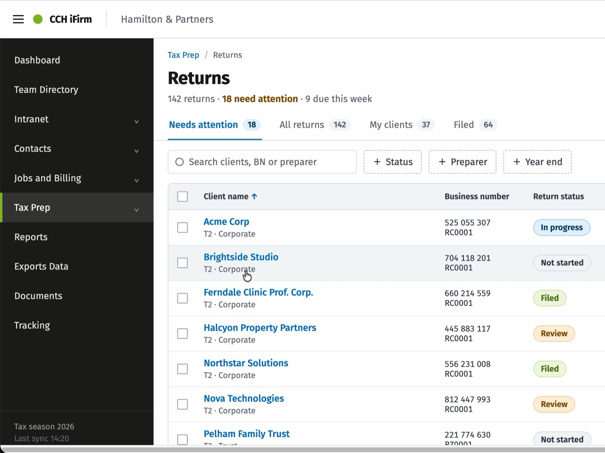

Hello, I’m Laura Benavente A Senior Product Designer building AI-native experiences
8+ years designing complex digital products across B2B SaaS, financial software and consumer technology.
From systems thinking to interaction,
From prototype to code.

I understood the work before I designed the software.
My path into product design began in accounting and finance.
Before designing interfaces, I worked with financial processes, business rules, deadlines, dependencies and real operational consequences. I experienced first-hand how complex software shapes people's work, and how easily that work becomes harder when the product does not reflect the reality behind it.
Product design gave me the tools to question those systems, connect different perspectives and make their complexity easier to understand.
Today, I combine financial-domain knowledge, systems thinking and product strategy to design clear, connected and scalable B2B SaaS experiences.
I understand financial software from both sides.
From strategy to build
- Strategy
- Systems
- Experience
- AI
- Build
design
01
Strategy
I uncover the real problem, challenge assumptions and define where design can create the most value.

02
Systems
I make complexity understandable by connecting workflows, users, business and technology.

03
Experience
I turn strategy into clear, thoughtful product experiences, from flows to interaction and UI.

04
AI
I design AI-powered experiences that make complex products more useful, intuitive and human.

05
Build
I use AI and code to prototype, explore and bring ideas closer to working products.


Three ways I approachproduct problems
Different problems require different levels of thinking.
See the system
Wolters Kluwer ecosystemUnderstanding how products, workflows and people connect across a complex ecosystem.
Systems · Complexity · Scale 02
02
Find the opportunity
Wolters Kluwer strategyLooking beyond the original requirement to identify where technology can genuinely change the product.
Product thinking · AI · Ambiguity 03
03
Make the experience work end to end
MovistarTaking product experiences end to end, designing interactions inside real technical constraints alongside the people building them
Interaction · Engineering · Execution
Story 1
Wolters Kluwer
ecosystem
Designing a cloud ecosystem for tax professionals
Development effort: from an L to an S
Story 2
Wolters Kluwer
strategy
Bringing AI-Assisted drafting inside the product, so professionals never start a client from an empty page.
Validated 3/3 · shipped in Canada

Story 3
Movistar
Designing a self-diagnosis experience for home connectivity, where the test could not be made faster and the wait had to be made understandable.
−12% call centre calls
About me
- I’m endlessly curious about the world around me.
- I like design, technology, nature, strange ideas and
- the little connections between them.
Designer by education. Product Designer by experience. Always learning.
- DegreeDigital Design
- BootcampUX / UI Design
- Master’sFront-End Development
- Experience8+ years
- LanguagesSpanish and English
Having fun with AI
Small experiments. Working prototypes. Serious questions.